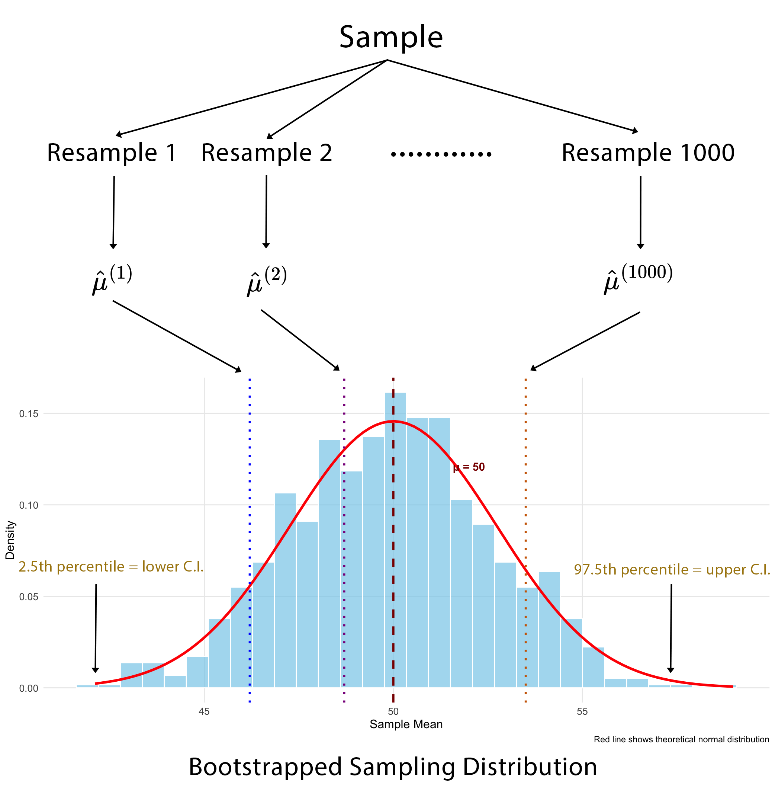

Primer and Intuition for Computational Non-Parametric Resampling
Published
August 28, 2026
Today I thought we’d discuss a stats topic that I’m sure you’ve heard about before, but perhaps not really understood, nor yet had a pressing need to use - bootstrap resampling. Now, I have to admit that I haven’t applied this technique much in my own day to day work either, but it’s an important statistical tool to have an understanding of, because there are times when it’s the only approach you can use. And the reason for that is the bootstrap can be considered a swiss army knife of parameter uncertainty estimation when the usual parametric distribution assumptions and resulting formulaic approximations that we base our standard error calculations on, either can’t be trusted or are simply unknown.
1 The Basis of Inferential Statistics
OK, before we dive into the main topic, let’s refresh our memories on some basic statistical concepts that are important in helping to understand what the bootstrap is all about. As you know, the application of statistics in our research is ultimately to allow us to make conclusions about some parameter of interest or importance - for example, that could be something as simple as the median survival or the average EDSS in an MS population.
We use data and models to do make those conclusions.
Now, in nearly all cases we want to know something about the population that we are studying, but all we have are data from a sample - because it’s just not practical to measure everyone. So we use statistical inference to infer or draw these conclusions about the population from the available sample. However, a very reasonable question may then be asked, and that is:
“How sure can we be of our conclusions?”
We can’t easily make claims about ‘effects’ when we can’t also quantify the margin of error associated with those claims. That is all the difference between asserting that you have strong evidence or in fact, pretty weak evidence after all. And that is where it’s important to always remember that statistical inference is really a two-side coin - we are not only interested in the estimation of the parameter that we want to know about, but also in the estimation of the uncertainty associated with it.
2 The Sampling Distribution
2.1 Basic concepts
And this is where the fundamental idea of the sampling distribution comes into play. In a nutshell, the sampling distribution represents the theoretical distribution of a sample statistic that’s derived from repeatedly randomly sampling a population of interest. Now this is a thought exercise only - we don’t do it for obvious reasons in practice - but it allows us to make assumptions about the behaviour of the population parameter that we are trying to estimate. (Note - while I say ‘theoretical’ above, these distributions can now be verified in silico but in the pre-computer era were confirmed empirically by a combination of mathematical derivation and physical simulation - i.e. bootstrapping by hand!)
In this thought exercise we would have a population that we are interested in calculating a parameter for, and we’d draw a sample of observations from this population. We’d then calculate the corresponding sample statistic - let’s say it’s a mean value - and we’d plot that on a frequency histogram. We would then repeat that process many times, plotting each mean value along the way. The resulting plot would show the distribution of all the sample means - and this is what we call the sampling distribution of the sample statistic. It’s important to note that this is NOT the distribution of the data itself, but the distribution of a summary statistic derived from the data.
Now, depending on the sample size, the shape of the underlying raw data distribution and the specific summary statistic we’re interested in, sampling distributions for many statistics often end up looking normal (or close to normal) in shape. And that allows us to leverage fairly simple normal distribution properties such as the mean and standard deviation (SD) to infer the population mean and it’s associated uncertainty. The mean should converge to the actual population parameter and the SD tells us about the uncertainty in the estimation of the parameter - and in fact is directly interpretable from the sampling distribution itself, as the standard error (SE). Once we have the SE it becomes trivial to calculate the 95% confidence interval (CI).
The point in telling you all of this is to highlight to you is that we can use just a single sample to form probabilistic statements about a population parameter, rather than needing to measure the entire population.
2.2 When it works
Most of the time the theory of parametric sampling distributions will work just fine for what you want to do. Probability density functions (PDF’s) that define the ‘shape’ of the sampling distribution have been derived for many sample statistics. These equations are sometimes referred to as ‘closed-form solutions’. Some PDF’s are fairly simple, other’s are almost intractably complex and some are simply unknown. But what is important about this, is that when you know the PDF for a sampling distribution, you can calculate exact 95% CI’s.
When PDF’s become too difficult or are simply unknown, we can start to leverage approximations. And that probably explains why I haven’t needed to bootstrap much in my own work - the classic central limit theorem (CLT) does its job pretty well. The CLT basically states that you can have whatever shaped raw data distribution you want - flat, skewed, bi-modal - whatever, but when you then construct a sampling distribution from the resulting sample means, that distribution will be normal in shape (if you’ve got a large enough sample).
The thing is, the logic of the central limit theorem translates fairly well to most other sample statistics of interest - for example, medians, proportions, correlations, regression coefficients, and more - through a concept called large-sample asymptotic normality. This approximation basically says that if our sample is large enough, the sampling distributions of these other parameters will likewise approach normality in terms of shape. What that means at the end of the day is that we can use fairly simple(-ish) equations for large sample approximations to estimate SE’s and 95% CI’s. The equations for the SE for the mean and proportion are shown below and I’m sure you’ve seen these before.
Clearly, there are situations that can occasionally arise when basic sampling theory might not be adequate for your analytic needs, otherwise we wouldn’t have this post. To my mind there are three main reasons why you might look further afield to a resampling method like the bootstrap to support your analyses.
The first is sample size. Asymptotic normal theory relies on a ‘large’ sample size to be accurate, and the bootstrap deals with smaller samples much better. However, it is itself not immune to small sample bias (when n becomes quite small - say < 15). In such cases not much can save you unless you collect more data, so you might just need to rely on descriptive statistics only.
The second situation is where equations for the SE are either so complex as to be virtually intractable, or simply don’t exist (as described above). Here you can use the bootstrap to estimate the sampling distribution directly with relative ease.
Finally, for sampling distributions that depart quite obviously from normality. Here the large-sample approximations just don’t work well, but you can use the bootstrap in these cases to actually capture that non-normal shape and apply it in valid inference.
2.4 Why is it called the bootstrap?
Alright - let’s actually talk about The Bootstrap! There is some interesting history in how the bootstrap came to be called what it is, as it’s etymology isn’t from the statistical domain. The origins of the term are sometimes attributed to an 18th century work of fiction - The Surprising Adventures of Baron Munchausen - in which Baron Munchausen’s plan for getting himself (and his horse) out of a swamp was to pull himself out by his bootstraps. Curiously there appears to be no actual reference to his bootstraps in the story itself, where instead he uses his own hair (pigtails to be specific).
In any case, over time the term evolved to mean many things but with the overarching theme of ‘performing a near impossible task’, or ‘doing more with less’. It is not unheard of today in political discourse as a narrative for self-starting economic mobility - that is, “if you just put in the hard work, you will eventually be successful”.
In statistics specifically, the bootstrap is used to mean that the population parameter we are interested in can be sufficiently defined by the sample of data that we have. In other words, ‘the sample “pulls itself up by its bootstraps”’.
Each of these ideas has existed in some form prior to the 1970s, both in the theoretical statistics literature and in the practice of various applied fields. But the authors consider that each has developed enough in the past 50 years to have essentially become something new and in many instances this has been facilitated by the modern computing age, as some of these techniques just weren’t practical to apply before we had fast computers. We have some ideas that you might already be familiar with from traditional statistics - counterfactual inference, multilevel model, robust inference, exploratory data analysis; and perhaps others that might be less so because they fall more into the realm of data science and predictive analytics - overparameterised models, generic algorithms and decision analysis.
Given that bootstrapping is one of these important statistical ideas from the last 50 years, let’s now learn some more about it.
3 The Bootstrap
3.1 What is it?
The bootstrap method is a resampling technique that estimates the sampling distribution of a statistic by treating the original sample as a proxy for the population. Instead of drawing new samples from an unknown population, which is what we learned about earlier, we simulate this process by repeatedly drawing samples - with replacement - from our single observed sample. And this allows us to approximate the variability and properties of the statistic, based on the assumption that our single, observed sample is a good representation of the underlying population.
In other words, the bootstrap treats the original sample as a miniature, empirical population. Each bootstrap sample is the same size as the original and is created by sampling with replacement. This “with replacement” step is critical because it ensures each bootstrap sample is a unique combination of values from the original data, simulating the variability you’d expect from a new sample.
So we use the same steps here that I outlined earlier in constructing the true sampling distribution - that is, for each bootstrap sample (and we typically specify thousands of them), we calculate our summary statistic and plot these as a frequency histogram. The collection of all these bootstrap sample statistics forms the bootstrap sampling distribution, which then serves as an estimate of the true sampling distribution.
We can then calculate other important measures such as the SE and CI’s by reading the 2.5 and 97.5 percentile values directly off the plot. We don’t actually need to invoke any mathematical formulae as we previously did - and that’s because we have an actual distribution now rather than just a theoretical one.
3.2 Bootstrap sampling distribution
Remember what our theoretical sampling distribution looked like? (scroll up if you don’t). Now when we look at our bootstrapped sampling distribution, there isn’t really much that’s changed. The main differences are that we’ve substituted our only sample for our population and we’re now ‘resampling’ from that, rather than sampling from our population. Everything else basically stays the same. Note how we can easily extract the confidence limits ‘empirically’, directly from the plot, by just ordering all the values from lowest to highest and taking the values at the 2.5 and 97.5 percentiles. These correspond to the lower and upper confidence limits, giving us 95% coverage for the true population parameter. Remember, the beauty of this method is that it doesn’t assume a specific distribution for the data, and that is extremely useful when the classical assumptions aren’t met.

3.3 Sampling distributions reimagined
These aren’t my images but I thought I’d show them to you because it’s a tangible visual take on the same two concepts, using the global population, and I think if you’ve been having some trouble following along, this should make things a lot clearer. The top picture shows the true (or theoretical) sampling distribution for a mean. We start off with all 7.6 billion people in the world and then take multiple samples from the population, calculating the mean in each sample and then plotting the distribution of those sample means.
You can also easily appreciate how the bootstrap sampling distribution differs, below that. We might still start off with our population, but it remains unrealised, and all we actually have is the one sample that we draw from it. Our bootstrap samples are then resamples of that one sample, with replacement. Note how in each bootstrap sample, one individual has been sampled twice - the grey person in the first, the purple in the second and the green in the third. But that’s fine and to be expected. We then calculate the mean in each resample and plot the distribution of those means.
Theoretical
Bootstrap
4 Practical Application
Ok, so we’ve talked a lot about the theory of bootstrapping, but let’s now see how the bootstrap can be applied in a couple of examples. We’ll look both at the sample mean and the sample correlation coefficient. The sampling distribution of the sample mean tends to be normal without much effort, but the correlation coefficient has poorer asymptotic properties, usually requiring much larger samples to become normal in shape. It is common, in fact, for it to have quite a skewed sampling distribution. So, let’s compare the confidence intervals that we get for each statistic using both the bootstrap and assuming approximate normality.
The primary package in R for bootstrapping is the boot package. Calling the corresponding boot function requires that you specify a minimum of 3 arguments: the first is your data; the second is a function that calculates the summary statistic that you’re interested in - for example, the sample mean; and the third is the number of bootstrap samples that you want to draw. And this is limited only by your computing power but usually at a minimum you want a thousand draws.
statistic = A function that produces the k statistics to be bootstrapped.
R = Number of bootstrap replicates (min = 1000)
Once you’ve done that, you can then ask for the bootstrap CI’s, and that is fairly simple to do with the boot.ci() function. This can take up to 3 arguments where you first specify the returned boot object that you created in the previous step, then you can specify the CI if you want (although it defaults to 95%), and finally you specify the ‘type’ of confidence interval you want to calculate. Now there are 5 of these - but it’s probably easier to just specify ‘all’ and you can then compare among them.
boot.ci(bootobject, conf =, type = ) where:
type = The type of confidence interval returned. Possible values are “norm”, “basic”, “stud”, “perc”, “bca” and “all” (default: type=“all”)
From what I have read, you can really just focus on two which seem to be regarded as the most accurate - the percentile method (which I’ve already described) and the bca method - which stands for bias-corrected. It seems that the bias-corrected method edges out the percentile method as it additionally adjusts for both bias and skewness in the bootstrap distribution. It’s generally regarded as the most accurate of the lot in a general-purpose sense, especially with small to moderate samples or strong skew.
5 Sample Mean
5.1 Raw Data Distribution
To do this in R we’re going to use an inbuilt dataset, and in fact it doesn’t even matter what that is, so I’m not going to describe it here (details are in the code at the end of this post that will allow you to fully reproduce all analyses).
This is the raw data distribution for the variable we’ll be bootstrapping the mean for, and it consists of 47 observations. You could argue that there’s a normal shape to it, but in all honesty, there probably aren’t enough data points to say that with certainty.
We’ll now take this variable and we’ll bootstrap it 1000 times - in other words we’ll take 1000 resamples each of size 47, replacing each value in the event that it’s drawn. Then we’ll calculate the mean value in each of those 1000 resamples.
5.2 Sampling Distribution
When we construct a frequency histogram of those 1000 mean values, we see the following:
There are a couple of salient things to note:
The first is that the bootstrap sampling distribution is quite normal in shape, even though the raw data distribution might not have been.
The second point is that the mean of the original sample and the mean of all the bootstrapped means is virtually identical.
This is a good thing as it means that the sample mean is an unbiased estimator of the population mean. Another way of saying this is that “if I were to repeat this study many times, the sample mean would, on average, hit the true population mean.”
The last thing to say about this plot is that if we wanted to obtain the bootstrapped confidence limits we could simply read off the values corresponding to the 2.5 and 97.5 percentiles from the plot. Of course, in practice you’d get your stats software to do this for you, but the point is that it’s quite easy to do and doesn’t involve any formulae.
5.3 Comparison of 95% CI’s
And these are the 95% CI’s from the various methods. The first one is the ‘theoretical’ - assuming normality and the others are derived from the boot.ci function after doing the bootstrapping procedure. Really, there’s not a lot to say about this - you can see that the coverage of all the CI’s is fairly similar, and that’s a good thing as it means you can can have increased confidence in the robustness of your results. (Note - the ‘theoretical’ CI in this case for the mean is based off a t test which enables ‘exact’ CI’s to be calculated as the PDF of the sampling distribution is known. So while I say ‘assuming normality’ in this case it’s really an exact CI).
6 Sample Correlation Coefficient
6.1 Raw Data Distribution
Ok - let’s now consider a different sample statistic that we might be interested in - the correlation coefficient. This is a scatterplot with overlaid density plot of the previous variable (on the x-axis) and a second variable (on the y-axis) from the same dataset. The marginal distribution of the second variable is far from normal as I’m sure you can appreciate, by looking at the density curve on the right side. When we look at the bivariate relationship in terms of the scatterplot itself, it’s not hard to imagine a negative relationship between the two variables.
6.2 Sampling Distribution
In contrast to the sample mean, the sampling distribution of the correlation coefficient does NOT have the same, simple, normal shape, straight out of the box. This statistic definitely relies on asymptotic normality based on having a large sample - larger than you would require for the sample mean.
This time when we construct a frequency histogram of those 1000 mean values, we get quite a positively skewed bootstrap sampling distribution, and there is no way we could argue this is normal in shape. The other observation that we can easily make is that the original sample correlation coefficient is different (more negative) to the mean of all the bootstrapped correlation coefficients.
What this reflects is that the sample correlation coefficient is a biased estimator of the population correlation coefficient. And another way of saying this is that “if I were to repeat this study many times, the sample correlation would, on average, consistently be closer to zero than the true population correlation.” Now, this bias is worse as the correlation approaches either plus or minus one, and with small sample sizes. The bias reduces as the sample size increases according to our large sample theory for asymptotic normality.
As with the sample mean, if we want to obtain empirical 95% CI’s we can just read off the corresponding values at the 2.5 and 97.5 percentiles.
6.3 Comparison of 95% CI’s
Confidence interval coverage with the correlation coefficient is also a little different to what we previously saw with the sample mean. The theoretical and two of the bootstrap intervals - the percentile and the bias-corrected percentile are quite similar, whereas the remaining two bootstrap intervals - the normal and basic are quite different. OK, so what do we believe here? Well, the normal and basic intervals should really only be trusted when we’ve got a large sample size and a well-behaved statistic - and you could make a good argument that we don’t really have either of those two conditions being met here. Therefore it’s either the percentile method or its bias-corrected variant and as I mentioned before the latter is probably the best method, in general, to choose. When we compare the bias-corrected interval to the theoretical interval, we can see that in fact they’re not that different, but the bias-corrected is a little more conservative (i.e. the CI is wider) - which is always a good thing, I think, in quantifying uncertainty.
So at the end of the day, for these data, it’s good to be able to report both types of CI’s - theoretical and empirical from the bootstrap. And that’s because we know from the outset that we’re dealing with a sample statistic that might not conform to the theoretical assumptions for CI estimation as well as a ‘better behaved’ statistic like the sample mean.
7 Wrap-Up
You’ll be glad to know that we have reached the end. Ok, so you might be wondering, what are the main takeaways from today’s post? Well, the first main point is that SE and CI estimation is really important in quantifying the uncertainty associated with a conclusion that we are trying to make from our research.
Most of the time we don’t have to think to deeply about this and just let our hypothesis test and/or model do the heavy lifting for us. That’s fine, but it’s also important to have some idea of what’s happening behind the scenes, and that is for many sample statistics we are leveraging large sample assumptions about asymptotic normality to theoretically derive our CI’s. It never hurts in these cases to run a bootstrap as well, with the aim of enhancing the robustness of our conclusions if the theoretical and empirical intervals agree, or discussing differences if they don’t.
Furthermore, This is NOT an option for some sample statistics that break these large-sample assumptions, and in these cases, the bootstrap is about all that we have, and therefore all we can use to quantify and report uncertainty estimates. For that reason, having a basic understanding of the bootstrap is a good skill to have in your statistics toolbox - you never know when you might need to use it, but you’ve then got it as an option when you do.
Code
# This script runs bootstraps on a sample mean and correlation coefficient and then plots the sampling distributions and CI's from the different methods as well as comparing to theoretical results.library(tidyverse)library(ggExtra)library(boot)data("swiss")swiss# Function to quickly extract all CI's from a boot.ci objectextract_boot_ci <-function(boot_ci_obj){ ci_df <-names(boot_ci_obj) |># We only want the CI types, which are stored as matriceskeep(~is.matrix(boot_ci_obj[[.x]])) |>map_df(~ { ci_matrix <- boot_ci_obj[[.x]]# Extract the lower/upper bounds lower_bound <- ci_matrix[1, ncol(ci_matrix) -1] upper_bound <- ci_matrix[1, ncol(ci_matrix)]# Return a data frame for this CI typetibble(type = .x,lower_ci = lower_bound,upper_ci = upper_bound ) }) |># Optionally, arrange the data frame for cleaner viewingmutate(type =factor(type, levels =c("normal", "basic", "percent", "bca", 'Theoretical'), labels =c("Bootstrap - Normal", "Bootstrap - Basic", "Bootstrap - Percentile", "Bootstrap - Bias Corrected", 'Theoretical'))) |>arrange(type) ci_df}#++++++++++++++++++++++++++++++# SAMPLE MEAN ----# Plot raw dataggplot(swiss, aes(x = Fertility)) +geom_histogram(aes(y = ..density..), binwidth =0.5, fill ="lightblue", color ="black") +stat_density(aes(y = ..density..), geom ="point", position ="identity", color ="darkblue", size =2) +scale_y_continuous(labels = abs) +labs(title ="Raw Data Distribution",x ="Data Value", y ="Density") +theme_minimal()# boot functionboot_calc_mean <-function(data, indices) {# Use the indices to resample the data sample_data <- data[indices]# Return the statistic (mean in this case)return(mean(sample_data))}# bootset.seed(20250111)boot_mean <-boot(swiss$Fertility, boot_calc_mean, R =1000)boot_mean_CIs <-boot.ci(boot_mean, type ="all")boot_mean_CIs# df of bootstrapped estimatesbootstrap_df <-data.frame(bootstrap_means =as.vector(boot_mean$t),original_mean = boot_mean$t0)# Calculate percentiles for confidence intervalci_lower <-quantile(boot_mean$t, 0.025)ci_upper <-quantile(boot_mean$t, 0.975)# Plotggplot(bootstrap_df, aes(x = bootstrap_means)) +geom_histogram(aes(y =after_stat(density)), bins =30, fill ="lightblue", color ="black", alpha =0.7) +geom_density(color ="blue", size =1) +geom_vline(aes(xintercept = original_mean, color ="Mean of Original Sample"), linetype ="dashed", size =1) +geom_vline(aes(xintercept =mean(boot_mean$t), color ="Mean of Bootstrap Sample Means"), linetype ="dashed", size =1) +# Add percentile lines for 95% CIgeom_vline(xintercept = ci_lower, color ="darkorange3", linetype ="dotted", size =1) +geom_vline(xintercept = ci_upper, color ="darkorange3", linetype ="dotted", size =1) +# Add labels for percentile valuesannotate("text", x = ci_lower, y =max(density(boot_mean$t)$y) *0.8, label =paste("2.5%\n", round(ci_lower, 2)), color ="darkorange3", hjust =1.1, size =3.5) +annotate("text", x = ci_upper, y =max(density(boot_mean$t)$y) *0.8, label =paste("97.5%\n", round(ci_upper, 2)), color ="darkorange3", hjust =-0.1, size =3.5) +# Manual color scale for legendscale_color_manual(name ="",values =c("Mean of Original Sample"="red", "Mean of Bootstrap Sample Means"="darkmagenta")) +labs(title ="Bootstrap Distribution with 95% Percentile Confidence Interval",x ="Bootstrap Sample Means",y ="Density",caption =paste("95% Percentile CI: [", round(ci_lower, 2), ", ", round(ci_upper, 2), "]")) +theme_minimal() +theme(legend.position ="top")# Compare to (t.test gives exact CI's - not technically large sample)t.test_sample_ci <-t.test(swiss$Fertility)# Extract CI's into dfboot_mean_CIs_df <-extract_boot_ci(boot_mean_CIs)# Add in t.test CI'sboot_mean_CIs_df <-rbind(boot_mean_CIs_df, data.frame(type ="Theoretical", lower_ci = t.test_sample_ci$conf.int[1], upper_ci = t.test_sample_ci$conf.int[2]))# Plot all CI's for visualisationggplot(boot_mean_CIs_df) +aes(xmin = lower_ci, xmax = upper_ci, y = type, color = type) +geom_vline(xintercept = boot_mean$t0, color ="red", linetype ="dashed", linewidth =1.2) +geom_vline(xintercept =mean(boot_mean$t), color ="darkmagenta", linetype ="dashed", linewidth =1.2) +geom_errorbar() +theme_minimal() +theme(legend.position ="none") +labs(y ="")#++++++++++++++++++++++++++++++# SAMPLE CORRELATION COEFFICIENT ----# Plot bivariate raw datascatterplot <-ggplot(swiss, aes(x = Fertility, y = Education)) +geom_point(color ="darkblue", alpha =0.7) +theme_minimal() +labs(title ="Bivariate Raw Data Distribution",x ="Data Value 1",y ="Data Value 2")# Add the marginal density plots using ggMarginal().# The 'type' argument specifies the type of marginal plot (e.g., "density", "histogram", "boxplot").# The 'fill' argument sets the fill color of the marginal plots.ggMarginal(scatterplot,type ="density",fill ="#D55E00",alpha =0.7)# boot function (note: data should be a data frame or matrix with 2 columns)boot_calc_cor <-function(data, indices) {# Resample the data using indices (this resamples paired observations) resampled_data <- data[indices, ]# Calculate correlation between the two variablescor(resampled_data[, 1], resampled_data[, 2])}# bootset.seed(20250111)boot_cor <-boot(cbind(swiss$Fertility, swiss$Education), boot_calc_cor, R =1000)boot_cor_CIs <-boot.ci(boot_cor, type ="all")boot_cor_CIs# df of bootstrapped estimatesbootstrap_df <-data.frame(bootstrap_cors =as.vector(boot_cor$t),original_cor = boot_cor$t0)# Calculate percentiles for confidence intervalci_lower <-quantile(boot_cor$t, 0.025)ci_upper <-quantile(boot_cor$t, 0.975)# Plotggplot(bootstrap_df, aes(x = bootstrap_cors)) +geom_histogram(aes(y =after_stat(density)), bins =30, fill ="lightblue", color ="black", alpha =0.7) +geom_density(color ="blue", size =1) +geom_vline(aes(xintercept = original_cor, color ="Correlation of Original Sample"), linetype ="dashed", size =1) +geom_vline(aes(xintercept =mean(boot_cor$t), color ="Mean of Bootstrap Sample Correlations"), linetype ="dashed", size =1) +# Add percentile lines for 95% CIgeom_vline(xintercept = ci_lower, color ="darkorange3", linetype ="dotted", size =1) +geom_vline(xintercept = ci_upper, color ="darkorange3", linetype ="dotted", size =1) +# Add labels for percentile valuesannotate("text", x = ci_lower, y =max(density(boot_mean$t)$y) *0.8, label =paste("2.5%\n", round(ci_lower, 2)), color ="darkorange3", hjust =1.1, vjust =-7, size =3.5) +annotate("text", x = ci_upper, y =max(density(boot_mean$t)$y) *0.8, label =paste("97.5%\n", round(ci_upper, 2)), color ="darkorange3", hjust =-0.1, vjust =-7, size =3.5) +# Manual color scale for legendscale_color_manual(name ="",values =c("Correlation of Original Sample"="red", "Mean of Bootstrap Sample Correlations"="darkmagenta")) +labs(title ="Bootstrap Distribution with 95% Percentile Confidence Interval",x ="Bootstrap Sample Correlations",y ="Density",caption =paste("95% Percentile CI: [", round(ci_lower, 2), ", ", round(ci_upper, 2), "]")) +theme_minimal() +theme(legend.position ="top")# Compare to (cor.test gives large sample approximation)cor.test_sample_ci <-cor.test(swiss$Fertility, swiss$Education)# Extract CI's into dfboot_cor_CIs_df <-extract_boot_ci(boot_cor_CIs)# Add in t.test CI'sboot_cor_CIs_df <-rbind(boot_cor_CIs_df, data.frame(type ="Theoretical", lower_ci = cor.test_sample_ci$conf.int[1], upper_ci = cor.test_sample_ci$conf.int[2]))# Plot all CI's for visualisationggplot(boot_cor_CIs_df) +aes(xmin = lower_ci, xmax = upper_ci, y = type, color = type) +geom_vline(xintercept = boot_cor$t0, color ="red", linetype ="dashed", linewidth =1.2) +geom_vline(xintercept =mean(boot_cor$t), color ="darkmagenta", linetype ="dashed", linewidth =1.2) +geom_errorbar() +theme_minimal() +theme(legend.position ="none") +labs(y ="")
Source Code
---title: "A Gentle Introduction to the Bootstrap"date: 2026-08-28categories: [code, concept, modelling]image: "images/bootstrapping.png"description: "Primer and Intuition for Computational Non-Parametric Resampling"---Today I thought we'd discuss a stats topic that I'm sure you've heard about before, but perhaps not really understood, nor yet had a pressing need to use - bootstrap resampling. Now, I have to admit that I haven't applied this technique much in my own day to day work either, but it's an important statistical tool to have an understanding of, because there are times when it's the only approach you can use. And the reason for that is the bootstrap can be considered a swiss army knife of parameter uncertainty estimation when the usual parametric distribution assumptions and resulting formulaic approximations that we base our standard error calculations on, either can't be trusted or are simply unknown.# The Basis of Inferential StatisticsOK, before we dive into the main topic, let's refresh our memories on some basic statistical concepts that are important in helping to understand what the bootstrap is all about. As you know, the application of statistics in our research is ultimately to allow us to make conclusions about some parameter of interest or importance - for example, that could be something as simple as the median survival or the average EDSS in an MS population.We use data and models to do make those conclusions.Now, in nearly all cases we want to know something about the population that we are studying, but all we have are data from a sample - because it's just not practical to measure everyone. So we use statistical inference to infer or draw these conclusions about the population from the available sample. However, a very reasonable question may then be asked, and that is:"How sure can we be of our conclusions?"We can't easily make claims about 'effects' when we can't also quantify the margin of error associated with those claims. That is all the difference between asserting that you have strong evidence or in fact, pretty weak evidence after all. And that is where it's important to always remember that statistical inference is really a two-side coin - we are not only interested in the estimation of the parameter that we want to know about, but also in the estimation of the uncertainty associated with it.{fig-align="center"}# The Sampling Distribution## Basic conceptsAnd this is where the fundamental idea of the *sampling distribution* comes into play. In a nutshell, the sampling distribution represents the **theoretical** distribution of a sample statistic that's derived from repeatedly randomly sampling a population of interest. Now this is a thought exercise only - we don't do it for obvious reasons in practice - but it allows us to make assumptions about the behaviour of the population parameter that we are trying to estimate. (Note - while I say 'theoretical' above, these distributions can now be verified *in silico* but in the pre-computer era were confirmed empirically by a combination of mathematical derivation and physical simulation - i.e. bootstrapping by hand!)In this thought exercise we would have a population that we are interested in calculating a parameter for, and we'd draw a sample of observations from this population. We'd then calculate the corresponding sample statistic - let's say it's a mean value - and we'd plot that on a frequency histogram. We would then repeat that process many times, plotting each mean value along the way. The resulting plot would show the distribution of all the sample means - and this is what we call the sampling distribution of the sample statistic. It's important to note that this is NOT the distribution of the data itself, but the distribution of a summary statistic derived from the data.{fig-align="center"}Now, depending on the sample size, the shape of the underlying raw data distribution and the specific summary statistic we're interested in, sampling distributions for many statistics often end up looking normal (or close to normal) in shape. And that allows us to leverage fairly simple normal distribution properties such as the mean and standard deviation (SD) to infer the population mean and it's associated uncertainty. The mean should converge to the actual population parameter and the SD tells us about the uncertainty in the estimation of the parameter - and in fact is directly interpretable from the sampling distribution itself, as the standard error (SE). Once we have the SE it becomes trivial to calculate the 95% confidence interval (CI).The point in telling you all of this is to highlight to you is that we can use just a single sample to form probabilistic statements about a population parameter, rather than needing to measure the entire population.## When it worksMost of the time the theory of parametric sampling distributions will work just fine for what you want to do. Probability density functions (PDF's) that define the 'shape' of the sampling distribution have been derived for many sample statistics. These equations are sometimes referred to as 'closed-form solutions'. Some PDF's are fairly simple, other's are almost intractably complex and some are simply unknown. But what is important about this, is that when you know the PDF for a sampling distribution, you can calculate **exact** 95% CI's.When PDF's become too difficult or are simply unknown, we can start to leverage approximations. And that probably explains why I haven't needed to bootstrap much in my own work - the classic central limit theorem (CLT) does its job pretty well. The CLT basically states that you can have whatever shaped raw data distribution you want - flat, skewed, bi-modal - whatever, but when you then construct a sampling distribution from the resulting sample means, that distribution will be normal in shape (if you've got a large enough sample).The thing is, the logic of the central limit theorem translates fairly well to most other sample statistics of interest - for example, medians, proportions, correlations, regression coefficients, and more - through a concept called **large-sample asymptotic normality**. This approximation basically says that if our sample is large enough, the sampling distributions of these other parameters will likewise approach normality in terms of shape. What that means at the end of the day is that we can use fairly simple(-ish) equations for large sample approximations to estimate SE's and 95% CI's. The equations for the SE for the mean and proportion are shown below and I'm sure you've seen these before.$$ \bar{x} \pm 1.96^* \frac{s}{\sqrt{n}} \hspace{2cm} \widehat{p} \pm 1.96^* \sqrt{\frac{\widehat{p}(1 - \widehat{p})}{n}} $$## When it doesn'tClearly, there are situations that can occasionally arise when basic sampling theory might not be adequate for your analytic needs, otherwise we wouldn't have this post. To my mind there are three main reasons why you might look further afield to a resampling method like the bootstrap to support your analyses.- The first is sample size. Asymptotic normal theory relies on a 'large' sample size to be accurate, and the bootstrap deals with smaller samples much better. However, it is itself not immune to small sample bias (when `n` becomes quite small - say \<`15`). In such cases not much can save you unless you collect more data, so you might just need to rely on descriptive statistics only.- The second situation is where equations for the SE are either so complex as to be virtually intractable, or simply don't exist (as described above). Here you can use the bootstrap to estimate the sampling distribution directly with relative ease.- Finally, for sampling distributions that depart quite obviously from normality. Here the large-sample approximations just don't work well, but you can use the bootstrap in these cases to actually capture that non-normal shape and apply it in valid inference.## Why is it called the bootstrap?Alright - let's actually talk about The Bootstrap! There is some interesting history in how the bootstrap came to be called what it is, as it's etymology isn't from the statistical domain. The [origins](https://en.wikipedia.org/wiki/Bootstrapping) of the term are sometimes attributed to an 18th century work of fiction - The Surprising Adventures of Baron Munchausen - in which Baron Munchausen's plan for getting himself (and his horse) out of a swamp was to pull himself out by his bootstraps. Curiously there appears to be no actual reference to his bootstraps in the story itself, where instead he uses his own hair (pigtails to be specific).In any case, over time the term evolved to mean many things but with the overarching theme of 'performing a near impossible task', or 'doing more with less'. It is not unheard of today in political discourse as a narrative for self-starting economic mobility - that is, "if you just put in the hard work, you will eventually be successful".In statistics specifically, the bootstrap is used to mean that the population parameter we are interested in can be sufficiently defined by the sample of data that we have. In other words, 'the sample "pulls itself up by its bootstraps"'.{fig-align="center" width="300"}## An important statistical ideaBefore I get to explaining what the bootstrap is in more detail, let me start by introducing a paper that was published in 2020 by two very well-known American statisticians - [What are the most important statistical ideas of the past 50 years](https://sites.stat.columbia.edu/gelman/research/unpublished/stat50.pdf).- Counterfactual causal inference- **Bootstrapping and simulation-based inference**- Overparameterized models and regularization- Multilevel models- Generic computation algorithms- Adaptive decision analysis- Robust inference- Exploratory data analysisEach of these ideas has existed in some form prior to the 1970s, both in the theoretical statistics literature and in the practice of various applied fields. But the authors consider that each has developed enough in the past 50 years to have essentially become something new and in many instances this has been facilitated by the modern computing age, as some of these techniques just weren't practical to apply before we had fast computers. We have some ideas that you might already be familiar with from traditional statistics - counterfactual inference, multilevel model, robust inference, exploratory data analysis; and perhaps others that might be less so because they fall more into the realm of data science and predictive analytics - overparameterised models, generic algorithms and decision analysis.Given that bootstrapping is one of these important statistical ideas from the last 50 years, let's now learn some more about it.# The Bootstrap## What is it?The bootstrap method is a resampling technique that estimates the sampling distribution of a statistic by treating the original sample as a proxy for the population. Instead of drawing new samples from an unknown population, which is what we learned about earlier, we simulate this process by repeatedly drawing samples - with replacement - from our single observed sample. And this allows us to approximate the variability and properties of the statistic, based on the assumption that our single, observed sample is a good representation of the underlying population.In other words, the bootstrap treats the original sample as a miniature, empirical population. Each bootstrap sample is the same size as the original and is created by sampling with replacement. This "with replacement" step is critical because it ensures each bootstrap sample is a unique combination of values from the original data, simulating the variability you'd expect from a new sample.So we use the same steps here that I outlined earlier in constructing the true sampling distribution - that is, for each bootstrap sample (and we typically specify thousands of them), we calculate our summary statistic and plot these as a frequency histogram. The collection of all these bootstrap sample statistics forms the bootstrap sampling distribution, which then serves as an estimate of the true sampling distribution.We can then calculate other important measures such as the SE and CI's by reading the `2.5` and `97.5` percentile values directly off the plot. We don't actually need to invoke any mathematical formulae as we previously did - and that's because we have an actual distribution now rather than just a theoretical one.## Bootstrap sampling distributionRemember what our theoretical sampling distribution looked like? (scroll up if you don't). Now when we look at our bootstrapped sampling distribution, there isn't really much that's changed. The main differences are that we've substituted our only sample for our population and we're now 'resampling' from that, rather than sampling from our population. Everything else basically stays the same. Note how we can easily extract the confidence limits 'empirically', directly from the plot, by just ordering all the values from lowest to highest and taking the values at the `2.5` and `97.5` percentiles. These correspond to the lower and upper confidence limits, giving us `95%` coverage for the true population parameter. Remember, the beauty of this method is that it doesn't assume a specific distribution for the data, and that is extremely useful when the classical assumptions aren't met.{fig-align="center"}## Sampling distributions reimaginedThese aren't my [images](https://ds100.org/course-notes/inference_causality/inference_causality.html) but I thought I'd show them to you because it's a tangible visual take on the same two concepts, using the global population, and I think if you've been having some trouble following along, this should make things a lot clearer. The top picture shows the true (or theoretical) sampling distribution for a mean. We start off with all `7.6` billion people in the world and then take multiple samples from the population, calculating the mean in each sample and then plotting the distribution of those sample means.You can also easily appreciate how the bootstrap sampling distribution differs, below that. We might still start off with our population, but it remains unrealised, and all we actually have is the one sample that we draw from it. Our bootstrap samples are then resamples of that one sample, with replacement. Note how in each bootstrap sample, one individual has been sampled twice - the grey person in the first, the purple in the second and the green in the third. But that's fine and to be expected. We then calculate the mean in each resample and plot the distribution of those means.- Theoretical{fig-align="center" width="596"}- Bootstrap{fig-align="center" width="696"}# Practical ApplicationOk, so we've talked a lot about the theory of bootstrapping, but let's now see how the bootstrap can be applied in a couple of examples. We'll look both at the sample mean and the sample correlation coefficient. The sampling distribution of the sample mean tends to be normal without much effort, but the correlation coefficient has poorer asymptotic properties, usually requiring much larger samples to become normal in shape. It is common, in fact, for it to have quite a skewed sampling distribution. So, let's compare the confidence intervals that we get for each statistic using both the bootstrap and assuming approximate normality.The primary package in R for bootstrapping is the `boot` package. Calling the corresponding `boot` function requires that you specify a minimum of `3` arguments: the first is your data; the second is a function that calculates the summary statistic that you're interested in - for example, the sample mean; and the third is the number of bootstrap samples that you want to draw. And this is limited only by your computing power but usually at a minimum you want a thousand draws.- `bootobject <- boot(data = , statistic = , R =, ...)` where: - data = A vector, matrix or dataframe. - statistic = A function that produces the k statistics to be bootstrapped. - R = Number of bootstrap replicates (min = 1000)Once you've done that, you can then ask for the bootstrap CI's, and that is fairly simple to do with the `boot.ci()` function. This can take up to `3` arguments where you first specify the returned boot object that you created in the previous step, then you can specify the CI if you want (although it defaults to `95%`), and finally you specify the 'type' of confidence interval you want to calculate. Now there are `5` of these - but it's probably easier to just specify 'all' and you can then compare among them.- `boot.ci(bootobject, conf =, type = )` where: - type = The type of confidence interval returned. Possible values are "norm", "basic", "stud", "perc", "bca" and "all" (default: type="all")From what I have read, you can really just focus on two which seem to be regarded as the most accurate - the percentile method (which I've already described) and the bca method - which stands for bias-corrected. It seems that the bias-corrected method edges out the percentile method as it additionally adjusts for both bias and skewness in the bootstrap distribution. It's generally regarded as the most accurate of the lot in a general-purpose sense, especially with small to moderate samples or strong skew.# Sample Mean## Raw Data DistributionTo do this in `R` we're going to use an inbuilt dataset, and in fact it doesn't even matter what that is, so I'm not going to describe it here (details are in the code at the end of this post that will allow you to fully reproduce all analyses).{fig-align="center"}This is the raw data distribution for the variable we'll be bootstrapping the mean for, and it consists of `47` observations. You could argue that there's a normal shape to it, but in all honesty, there probably aren't enough data points to say that with certainty.We'll now take this variable and we'll bootstrap it `1000` times - in other words we'll take `1000` resamples each of size `47`, replacing each value in the event that it's drawn. Then we'll calculate the mean value in each of those `1000` resamples.## Sampling DistributionWhen we construct a frequency histogram of those `1000` mean values, we see the following:{fig-align="center"}There are a couple of salient things to note:- The first is that the bootstrap sampling distribution is quite normal in shape, even though the raw data distribution might not have been.- The second point is that the mean of the original sample and the mean of all the bootstrapped means is virtually identical.This is a good thing as it means that the sample mean is an **unbiased** estimator of the population mean. Another way of saying this is that "*if I were to repeat this study many times, the sample mean would, on average, hit the true population mean.*"- The last thing to say about this plot is that if we wanted to obtain the bootstrapped confidence limits we could simply read off the values corresponding to the `2.5` and `97.5` percentiles from the plot. Of course, in practice you'd get your stats software to do this for you, but the point is that it's quite easy to do and doesn't involve any formulae.## Comparison of 95% CI's{fig-align="center"}And these are the `95%` CI's from the various methods. The first one is the 'theoretical' - assuming normality and the others are derived from the `boot.ci` function after doing the bootstrapping procedure. Really, there's not a lot to say about this - you can see that the coverage of all the CI's is fairly similar, and that's a good thing as it means you can can have increased confidence in the robustness of your results. (Note - the 'theoretical' CI in this case for the mean is based off a t test which enables 'exact' CI's to be calculated as the PDF of the sampling distribution is known. So while I say 'assuming normality' in this case it's really an exact CI).# Sample Correlation Coefficient## Raw Data Distribution{fig-align="center"}Ok - let's now consider a different sample statistic that we might be interested in - the correlation coefficient. This is a scatterplot with overlaid density plot of the previous variable (on the x-axis) and a second variable (on the y-axis) from the same dataset. The marginal distribution of the second variable is far from normal as I'm sure you can appreciate, by looking at the density curve on the right side. When we look at the bivariate relationship in terms of the scatterplot itself, it's not hard to imagine a negative relationship between the two variables.## Sampling DistributionIn contrast to the sample mean, the sampling distribution of the correlation coefficient does NOT have the same, simple, normal shape, straight out of the box. This statistic definitely relies on asymptotic normality based on having a large sample - larger than you would require for the sample mean.{fig-align="center"}This time when we construct a frequency histogram of those `1000` mean values, we get quite a positively skewed bootstrap sampling distribution, and there is no way we could argue this is normal in shape. The other observation that we can easily make is that the original sample correlation coefficient is different (more negative) to the mean of all the bootstrapped correlation coefficients.What this reflects is that the sample correlation coefficient is a **biased** estimator of the population correlation coefficient. And another way of saying this is that "*if I were to repeat this study many times, the sample correlation would, on average, consistently be closer to zero than the true population correlation.*" Now, this bias is worse as the correlation approaches either plus or minus one, and with small sample sizes. The bias reduces as the sample size increases according to our large sample theory for asymptotic normality.As with the sample mean, if we want to obtain empirical `95%` CI's we can just read off the corresponding values at the `2.5` and `97.5` percentiles.## Comparison of 95% CI's{fig-align="center"}Confidence interval coverage with the correlation coefficient is also a little different to what we previously saw with the sample mean. The theoretical and two of the bootstrap intervals - the percentile and the bias-corrected percentile are quite similar, whereas the remaining two bootstrap intervals - the normal and basic are quite different. OK, so what do we believe here? Well, the normal and basic intervals should really only be trusted when we've got a large sample size and a well-behaved statistic - and you could make a good argument that we don't really have either of those two conditions being met here. Therefore it's either the percentile method or its bias-corrected variant and as I mentioned before the latter is probably the best method, in general, to choose. When we compare the bias-corrected interval to the theoretical interval, we can see that in fact they're not that different, but the bias-corrected is a little more conservative (i.e. the CI is wider) - which is always a good thing, I think, in quantifying uncertainty.So at the end of the day, for these data, it's good to be able to report both types of CI's - theoretical and empirical from the bootstrap. And that's because we know from the outset that we're dealing with a sample statistic that might not conform to the theoretical assumptions for CI estimation as well as a 'better behaved' statistic like the sample mean.# Wrap-UpYou'll be glad to know that we have reached the end. Ok, so you might be wondering, what are the main takeaways from today's post? Well, the first main point is that SE and CI estimation is really important in quantifying the uncertainty associated with a conclusion that we are trying to make from our research.Most of the time we don't have to think to deeply about this and just let our hypothesis test and/or model do the heavy lifting for us. That's fine, but it's also important to have some idea of what's happening behind the scenes, and that is for many sample statistics we are leveraging large sample assumptions about asymptotic normality to theoretically derive our CI's. It never hurts in these cases to run a bootstrap as well, with the aim of enhancing the robustness of our conclusions if the theoretical and empirical intervals agree, or discussing differences if they don't.Furthermore, This is NOT an option for some sample statistics that break these large-sample assumptions, and in these cases, the bootstrap is about all that we have, and therefore all we can use to quantify and report uncertainty estimates. For that reason, having a basic understanding of the bootstrap is a good skill to have in your statistics toolbox - you never know when you might need to use it, but you've then got it as an option when you do.```{r}#| eval: false# This script runs bootstraps on a sample mean and correlation coefficient and then plots the sampling distributions and CI's from the different methods as well as comparing to theoretical results.library(tidyverse)library(ggExtra)library(boot)data("swiss")swiss# Function to quickly extract all CI's from a boot.ci objectextract_boot_ci <-function(boot_ci_obj){ ci_df <-names(boot_ci_obj) |># We only want the CI types, which are stored as matriceskeep(~is.matrix(boot_ci_obj[[.x]])) |>map_df(~ { ci_matrix <- boot_ci_obj[[.x]]# Extract the lower/upper bounds lower_bound <- ci_matrix[1, ncol(ci_matrix) -1] upper_bound <- ci_matrix[1, ncol(ci_matrix)]# Return a data frame for this CI typetibble(type = .x,lower_ci = lower_bound,upper_ci = upper_bound ) }) |># Optionally, arrange the data frame for cleaner viewingmutate(type =factor(type, levels =c("normal", "basic", "percent", "bca", 'Theoretical'), labels =c("Bootstrap - Normal", "Bootstrap - Basic", "Bootstrap - Percentile", "Bootstrap - Bias Corrected", 'Theoretical'))) |>arrange(type) ci_df}#++++++++++++++++++++++++++++++# SAMPLE MEAN ----# Plot raw dataggplot(swiss, aes(x = Fertility)) +geom_histogram(aes(y = ..density..), binwidth =0.5, fill ="lightblue", color ="black") +stat_density(aes(y = ..density..), geom ="point", position ="identity", color ="darkblue", size =2) +scale_y_continuous(labels = abs) +labs(title ="Raw Data Distribution",x ="Data Value", y ="Density") +theme_minimal()# boot functionboot_calc_mean <-function(data, indices) {# Use the indices to resample the data sample_data <- data[indices]# Return the statistic (mean in this case)return(mean(sample_data))}# bootset.seed(20250111)boot_mean <-boot(swiss$Fertility, boot_calc_mean, R =1000)boot_mean_CIs <-boot.ci(boot_mean, type ="all")boot_mean_CIs# df of bootstrapped estimatesbootstrap_df <-data.frame(bootstrap_means =as.vector(boot_mean$t),original_mean = boot_mean$t0)# Calculate percentiles for confidence intervalci_lower <-quantile(boot_mean$t, 0.025)ci_upper <-quantile(boot_mean$t, 0.975)# Plotggplot(bootstrap_df, aes(x = bootstrap_means)) +geom_histogram(aes(y =after_stat(density)), bins =30, fill ="lightblue", color ="black", alpha =0.7) +geom_density(color ="blue", size =1) +geom_vline(aes(xintercept = original_mean, color ="Mean of Original Sample"), linetype ="dashed", size =1) +geom_vline(aes(xintercept =mean(boot_mean$t), color ="Mean of Bootstrap Sample Means"), linetype ="dashed", size =1) +# Add percentile lines for 95% CIgeom_vline(xintercept = ci_lower, color ="darkorange3", linetype ="dotted", size =1) +geom_vline(xintercept = ci_upper, color ="darkorange3", linetype ="dotted", size =1) +# Add labels for percentile valuesannotate("text", x = ci_lower, y =max(density(boot_mean$t)$y) *0.8, label =paste("2.5%\n", round(ci_lower, 2)), color ="darkorange3", hjust =1.1, size =3.5) +annotate("text", x = ci_upper, y =max(density(boot_mean$t)$y) *0.8, label =paste("97.5%\n", round(ci_upper, 2)), color ="darkorange3", hjust =-0.1, size =3.5) +# Manual color scale for legendscale_color_manual(name ="",values =c("Mean of Original Sample"="red", "Mean of Bootstrap Sample Means"="darkmagenta")) +labs(title ="Bootstrap Distribution with 95% Percentile Confidence Interval",x ="Bootstrap Sample Means",y ="Density",caption =paste("95% Percentile CI: [", round(ci_lower, 2), ", ", round(ci_upper, 2), "]")) +theme_minimal() +theme(legend.position ="top")# Compare to (t.test gives exact CI's - not technically large sample)t.test_sample_ci <-t.test(swiss$Fertility)# Extract CI's into dfboot_mean_CIs_df <-extract_boot_ci(boot_mean_CIs)# Add in t.test CI'sboot_mean_CIs_df <-rbind(boot_mean_CIs_df, data.frame(type ="Theoretical", lower_ci = t.test_sample_ci$conf.int[1], upper_ci = t.test_sample_ci$conf.int[2]))# Plot all CI's for visualisationggplot(boot_mean_CIs_df) +aes(xmin = lower_ci, xmax = upper_ci, y = type, color = type) +geom_vline(xintercept = boot_mean$t0, color ="red", linetype ="dashed", linewidth =1.2) +geom_vline(xintercept =mean(boot_mean$t), color ="darkmagenta", linetype ="dashed", linewidth =1.2) +geom_errorbar() +theme_minimal() +theme(legend.position ="none") +labs(y ="")#++++++++++++++++++++++++++++++# SAMPLE CORRELATION COEFFICIENT ----# Plot bivariate raw datascatterplot <-ggplot(swiss, aes(x = Fertility, y = Education)) +geom_point(color ="darkblue", alpha =0.7) +theme_minimal() +labs(title ="Bivariate Raw Data Distribution",x ="Data Value 1",y ="Data Value 2")# Add the marginal density plots using ggMarginal().# The 'type' argument specifies the type of marginal plot (e.g., "density", "histogram", "boxplot").# The 'fill' argument sets the fill color of the marginal plots.ggMarginal(scatterplot,type ="density",fill ="#D55E00",alpha =0.7)# boot function (note: data should be a data frame or matrix with 2 columns)boot_calc_cor <-function(data, indices) {# Resample the data using indices (this resamples paired observations) resampled_data <- data[indices, ]# Calculate correlation between the two variablescor(resampled_data[, 1], resampled_data[, 2])}# bootset.seed(20250111)boot_cor <-boot(cbind(swiss$Fertility, swiss$Education), boot_calc_cor, R =1000)boot_cor_CIs <-boot.ci(boot_cor, type ="all")boot_cor_CIs# df of bootstrapped estimatesbootstrap_df <-data.frame(bootstrap_cors =as.vector(boot_cor$t),original_cor = boot_cor$t0)# Calculate percentiles for confidence intervalci_lower <-quantile(boot_cor$t, 0.025)ci_upper <-quantile(boot_cor$t, 0.975)# Plotggplot(bootstrap_df, aes(x = bootstrap_cors)) +geom_histogram(aes(y =after_stat(density)), bins =30, fill ="lightblue", color ="black", alpha =0.7) +geom_density(color ="blue", size =1) +geom_vline(aes(xintercept = original_cor, color ="Correlation of Original Sample"), linetype ="dashed", size =1) +geom_vline(aes(xintercept =mean(boot_cor$t), color ="Mean of Bootstrap Sample Correlations"), linetype ="dashed", size =1) +# Add percentile lines for 95% CIgeom_vline(xintercept = ci_lower, color ="darkorange3", linetype ="dotted", size =1) +geom_vline(xintercept = ci_upper, color ="darkorange3", linetype ="dotted", size =1) +# Add labels for percentile valuesannotate("text", x = ci_lower, y =max(density(boot_mean$t)$y) *0.8, label =paste("2.5%\n", round(ci_lower, 2)), color ="darkorange3", hjust =1.1, vjust =-7, size =3.5) +annotate("text", x = ci_upper, y =max(density(boot_mean$t)$y) *0.8, label =paste("97.5%\n", round(ci_upper, 2)), color ="darkorange3", hjust =-0.1, vjust =-7, size =3.5) +# Manual color scale for legendscale_color_manual(name ="",values =c("Correlation of Original Sample"="red", "Mean of Bootstrap Sample Correlations"="darkmagenta")) +labs(title ="Bootstrap Distribution with 95% Percentile Confidence Interval",x ="Bootstrap Sample Correlations",y ="Density",caption =paste("95% Percentile CI: [", round(ci_lower, 2), ", ", round(ci_upper, 2), "]")) +theme_minimal() +theme(legend.position ="top")# Compare to (cor.test gives large sample approximation)cor.test_sample_ci <-cor.test(swiss$Fertility, swiss$Education)# Extract CI's into dfboot_cor_CIs_df <-extract_boot_ci(boot_cor_CIs)# Add in t.test CI'sboot_cor_CIs_df <-rbind(boot_cor_CIs_df, data.frame(type ="Theoretical", lower_ci = cor.test_sample_ci$conf.int[1], upper_ci = cor.test_sample_ci$conf.int[2]))# Plot all CI's for visualisationggplot(boot_cor_CIs_df) +aes(xmin = lower_ci, xmax = upper_ci, y = type, color = type) +geom_vline(xintercept = boot_cor$t0, color ="red", linetype ="dashed", linewidth =1.2) +geom_vline(xintercept =mean(boot_cor$t), color ="darkmagenta", linetype ="dashed", linewidth =1.2) +geom_errorbar() +theme_minimal() +theme(legend.position ="none") +labs(y ="")```